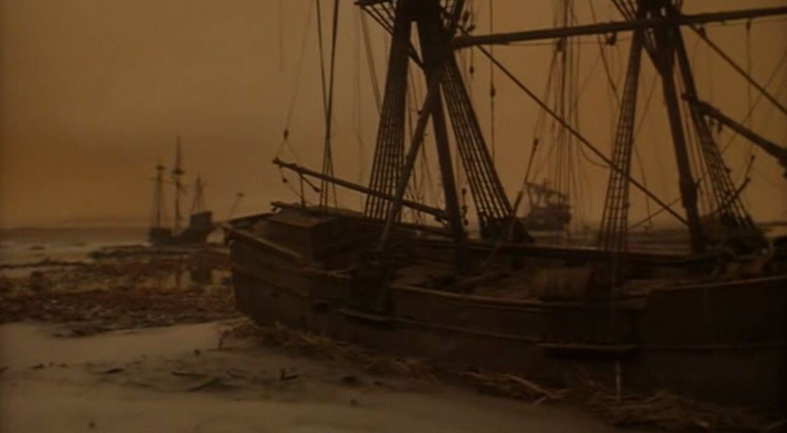

Monday, December the 19th, 2011
back to: title, date or indexes

Today's Hooting Yard Advent Calendar picture shows the graveyard of ships marooned in the Sargasso Sea from The Lost Continent (Michael Carreras, 1968), based on the novel Uncharted Seas by Dennis Wheatley (1938). Featuring giant crab monsters, killer seaweed, and a colony of ultra Roman Catholic descendants of Spanish conquistadors.